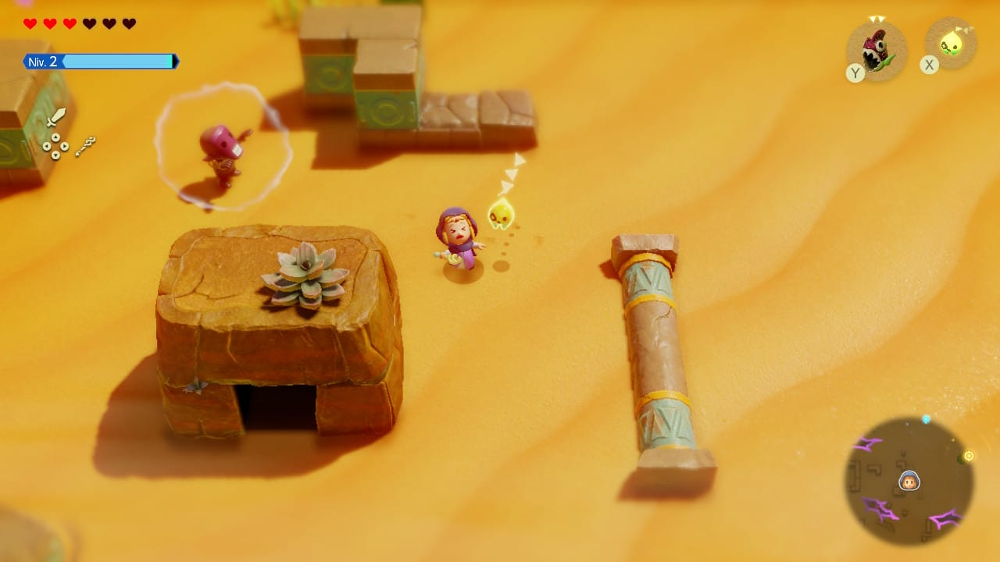
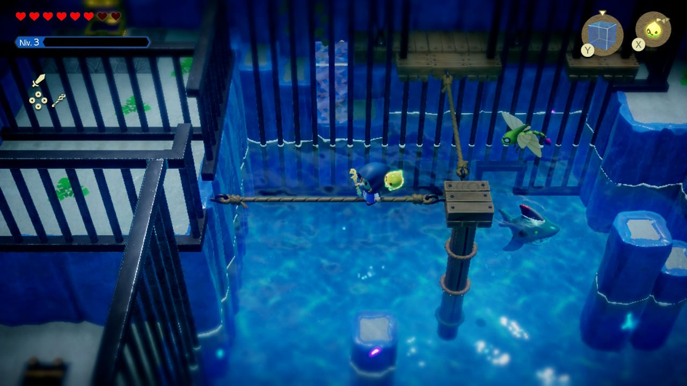

un jeu d'action-aventure sorti le 26 septembre 2024 sur Nintendo Switch.
Pour la première fois dans la série principale, la princesse Zelda est le personnage jouable principal, prenant la place traditionnelle de Link.
Le royaume d'Hyrule est menacé par des failles mystérieuses qui absorbent des régions entières et leurs habitants, y compris le héros Link.
Armée du Tri Bâton et accompagnée de la fée Tri, la princesse Zelda entreprend une quête pour sceller ces failles et sauver son royaume.
Un très bon jeu pour découvrir la licence Zelda.
Avec un style graphique 3D réussi et des musiques bien composées, il crée une véritable immersion.
L’histoire intrigante nous donne envie de découvrir la suite, et les rencontres avec des personnages attachants ajoutent une belle profondeur.
Le gameplay est original grâce au pouvoir de créer des échos (des objets scannés) et à la synchronisation, qui permet de déplacer des objets, de faire des combinaisons intéressantes, et bien plus encore.
Le jeu m’a pris environ 50 heures pour atteindre les 100 %, un défi très correct et agréable à relever.
Voici quelque images du jeu

